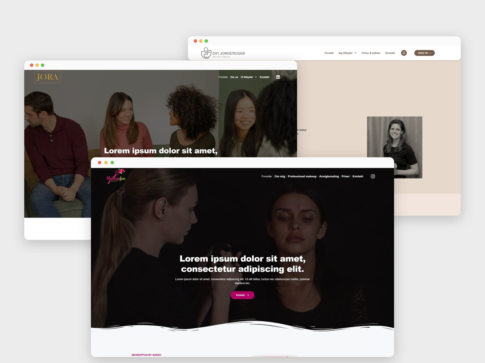

SELECTED WORKS
Featured Projects
Client websites I designed at a web agency, and app projects taken from research to prototype.
Client websites

Client Work · Web Content & Design Specialist Intern @ Talento Plus
Real Client Websites
Talento Plus ApS · Feb – May 2026 · Copenhagen
Fully polishing every first draft took 1.5 days per site, so I started building each client's core requirements first and adding polish only on request, which cut it to 1 day per site with no drop in client satisfaction. Across 30+ small Danish businesses, I designed the first version of each site in WordPress (Elementor Pro); three are shown in the case study.
Clients: Mesterbyg · Makeupfun by Sarah · Joraliv ApS · LunaPGroup ApS ·
Din Jordemoder v Majken Krogh...
App & product projects
AI-Native Personal Project
Job Search Tracker
Built with Claude Code · Aug 2026
Logging job applications in Excel took me about 30 minutes a day and hid the patterns I needed, so I designed my own tracker and directed Claude Code to build it. It now shows my reply rate and breaks my 238 applications down by stage, month, location and channel.

Master Graduation Project · DTU
Designing for Less Stress
DTU · Feb – Aug 2025
In usability testing, many students couldn't find the AI-assist button when asked to, because it sat below the scroll, so I moved it to a floating button that stays on screen. The app helps university students deal with stress through peer-support groups, and 71% of test participants said it felt helpful.


More work
ABOUT ME

I design it.
Then I build it.
I'm Zhixuan, a UX/UI and web designer in Copenhagen with an MSc in Design & Innovation from DTU (2025). I started in industrial design in China, and freelancing after graduation moved me from physical products to digital ones. I still work like a builder: find out what users need, lay out the structure, then build on top of it.
Right now I'm co-founding BloomBento, a smart herb-growing device. I own the app design end to end and direct Claude Code, which writes all the code; I read the code to check it matches my designs.
"Structure first, style second. When the structure is right, the style can be as quiet or as loud as the project needs."
Co-Founder & App Designer
BloomBento · Aug 2026 – Present
Web Content & Design Specialist Intern
Talento Plus ApS · Feb 2026 – May 2026
MSc Design & Innovation
Technical University of Denmark (DTU) ·
2023–2025
CAREER PATH
Experience
Where I've designed websites and apps so far: an agency, early-stage startups and my master's thesis.
Work:Aug 2026 – PresentNowCo-Founder & App Designer (part-time)BloomBento · Copenhagen
- Own the app design end to end; built in React Native (Expo)
- Direct Claude Code, which writes all the code; I read the code to check it matches my designs
Work:Feb 2026 – May 2026Web Content & Design Specialist InternTalento Plus ApS · Copenhagen
- Owned the first-version design of 30+ client websites
- Cut design time per site from 1.5 days to 1 by building core requirements first
Work:Oct 2025 – Jan 2026UX/UI Design InternMaestro · Copenhagen
- Market research on gamified learning apps
- User flows, wireframes and clickable Figma prototypes for web and mobile
Work:Feb 2024 – Aug 2024UX/UI Student WorkerThe Self Hug · Copenhagen
- Market research and competitive analysis; presented findings to the PM
- Low-fidelity and high-fidelity designs in Figma
Work:Feb 2024 – Jul 2024UX/UI DesignerParkflux (DTU X-tech startup) · Copenhagen
- Designed the B2B dashboard and the driver app
- Five-person team, through to the final DTU X-tech pitch
Education:Aug 2023 – Sep 2025MSc, Design and InnovationTechnical University of Denmark (DTU) · Copenhagen
- Graduation project: Designing for Less Stress, an app that helps university students with stress
Work:Sep 2021 – Jul 2023Freelance UX/UI & Visual DesignerWeng Design Studio (self-employed) · Changsha
- Designed for 5–10 education and corporate clients, found through freelance platforms
- Took each project from brief to delivery on my own, and delivered every one on time
Work:May 2021 – Jul 2021Human Machine Interface InternAudi · China
- Led market research of in-car HMIs for top EV brands (XPENG, NIO)
- Documented user task flows and identified usability issues
Education:Sep 2016 – Jul 2020B.Eng, Industrial DesignChina University of Mining and Technology · Xuzhou
- Where I started: industrial design, before moving to digital products
Co-Founder & App Designer(part-time)
Aug 2026 – Present
BloomBento · Copenhagen
- Co-founded a startup building a smart, reusable device for growing herbs at home — using low-cost sensors, a camera that watches the roots grow, and an AI-written companion story
- Own the app design end to end; the app is built in React Native (Expo) with a Supabase backend
- Direct Claude Code, which writes all the code; I read the code to check it matches my designs
- Currently preparing for launch, targeting a Google Play release in late 2026
Web Content & Design Specialist Intern
Feb 2026 – May 2026
Talento Plus ApS · Copenhagen
- Owned the first-version design of 30+ client websites; several went live close to my original design
- Set a distinct visual direction for each client based on industry and audience, from calm and personal (a midwife) to bold and playful (a makeup artist)
- Reworked my delivery process (core requirements first, polish on request), cutting design time per site by a third, from 1.5 days to 1 day, with no drop in client satisfaction
- Built a reusable section component for the agency's shared template library; worked with the project manager on briefs and client feedback, and with the developer on revisions
UX/UI Design Intern
Oct 2025 – Jan 2026
Maestro · Copenhagen
- Did market research on existing gamified learning apps
- Worked with the founder to analyse their research with 30+ teachers and students, and turned it into four app modules: Listening, Practicing, Playing and a Homepage
- Designed the user flows, wireframes and clickable Figma prototypes for web and mobile
UX/UI Designer
Feb 2024 – Jul 2024
Parkflux (DTU X-tech startup) · Copenhagen
- Worked from the real needs of client PARKZONE, whose number-plate cameras and parking data sat in separate systems
- Designed the B2B dashboard and the driver app: core user flows, page structure and key data visuals
- Worked in a five-person team with a project manager, another designer, a software engineer and a mechanical engineer, through to the final DTU X-tech pitch
UX/UI Student Worker
Feb 2024 – Aug 2024
The Self Hug · Copenhagen
- Conducted market research and competitive analysis; presented findings to the PM
- Planned the app mock-up process and milestones
- Produced low-fidelity and high-fidelity designs in Figma
Human Machine Interface Intern
May 2021 – Jul 2021
Audi · China
- Led market research of in-car HMIs for top EV brands (XPENG, NIO)
- Documented user task flows and identified usability issues
- Proposed interaction improvements
MSc, Design and Innovation
Aug 2023 – Sep 2025
Technical University of Denmark (DTU) · Copenhagen
B.Eng, Industrial Design
Sep 2016 – Jul 2020
China University of Mining and Technology · Xuzhou
BEYOND WORK
More about me
What I do when I'm not designing.
Travel
Transition videos from my trips.
Let's work
together :)
Open to UX/UI and web designer roles in Copenhagen.